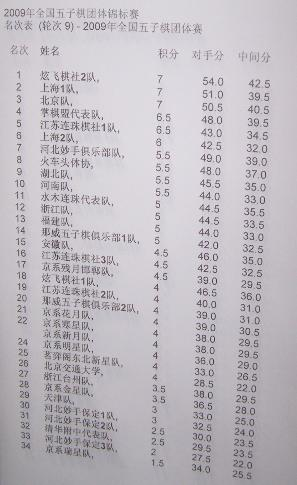

第三届全团赛最终积分表
首页
五子棋新闻
#1 第三届全团赛最终积分表 作者：无尽 发表时间：2009-5-30 11:04:09
 ［ yoda 于 2009-5-30 11:42:58 时花20金币送鲜花一朵］
#2 Re:第三届全团赛最终积分表 作者：五子痴 发表时间：2009-5-30 11:07:14
沙发 庆祝比赛圆满结束 恭喜炫飞夺冠
#3 Re:第三届全团赛最终积分表 作者：岳麓小棋后 发表时间：2009-5-30 11:18:26
恭喜恭喜，选手们该好好放松了，这3天高密集的脑力活动，一天4轮，不讶于高考吧
借着这个机会在北京好好聚聚，好好玩撒，大赛过后时间和空间都变的非常悠远了呵，那感觉轻飘飘的
#4 Re:第三届全团赛最终积分表 作者：岳麓小棋后 发表时间：2009-5-30 11:18:50
另外最佳台次出来了吗？
#5 Re:第三届全团赛最终积分表 作者：无尽 发表时间：2009-5-30 11:21:44
祝贺祝贺！
#6 Re:第三届全团赛最终积分表 作者：雨一直下 发表时间：2009-5-30 11:28:23
炫飞第一,多谢选手的努力,多谢大家的支持!
#7 Re:第三届全团赛最终积分表 作者：王志伟123 发表时间：2009-5-30 11:35:09
祝贺祝贺
#8 Re:第三届全团赛最终积分表 作者：阔哥 发表时间：2009-5-30 11:50:16
祝贺祝贺
#9 Re:第三届全团赛最终积分表 作者：飞奔的红莲 发表时间：2009-5-30 12:05:22
祝贺炫飞夺冠
#10 Re:第三届全团赛最终积分表 作者：沈毅 发表时间：2009-5-30 12:14:05
热烈祝贺上海队，尤其祝贺上海二队
#11 Re:第三届全团赛最终积分表 作者：魔戒 发表时间：2009-5-30 12:21:00
祝贺炫飞二队 夺冠！！！向炫飞所有的参赛选手致敬！！！你们辛苦了！！！
［ 流逝 于 2009-5-30 22:19:55 时花20金币送鲜花一朵］
#12 Re:第三届全团赛最终积分表 作者：邓飞 发表时间：2009-5-30 12:25:48
祝贺祝贺，同喜同乐
［ 流逝 于 2009-5-30 22:20:14 时花20金币送鲜花一朵］
#13 Re:第三届全团赛最终积分表 作者：梦婷 发表时间：2009-5-30 13:27:54
祝贺炫飞夺冠 ［ 流逝 于 2009-5-30 22:20:22 时花20金币送鲜花一朵］
#14 Re:第三届全团赛最终积分表 作者：孤竹 发表时间：2009-5-30 18:05:41
江苏连珠名次不错